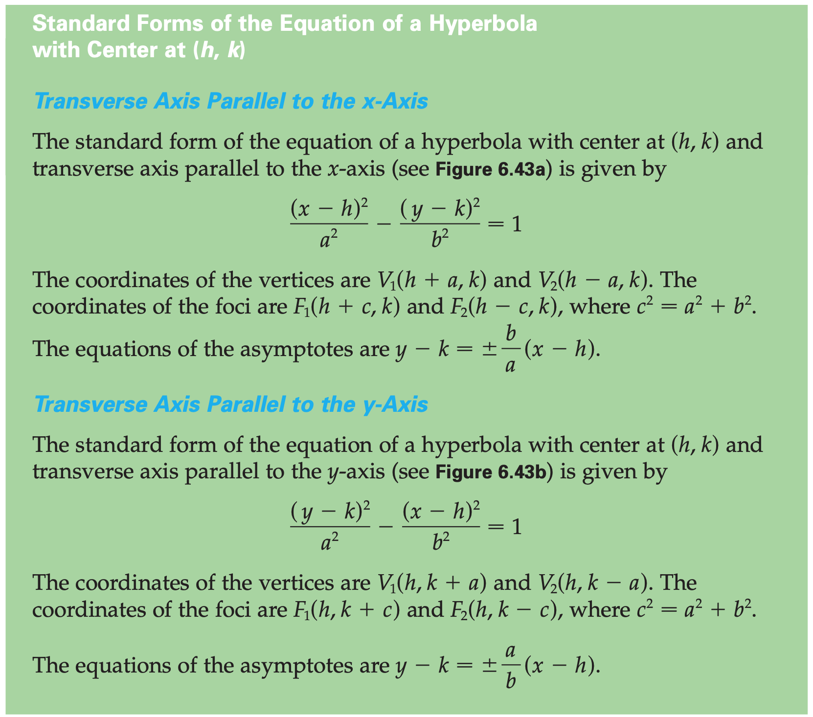
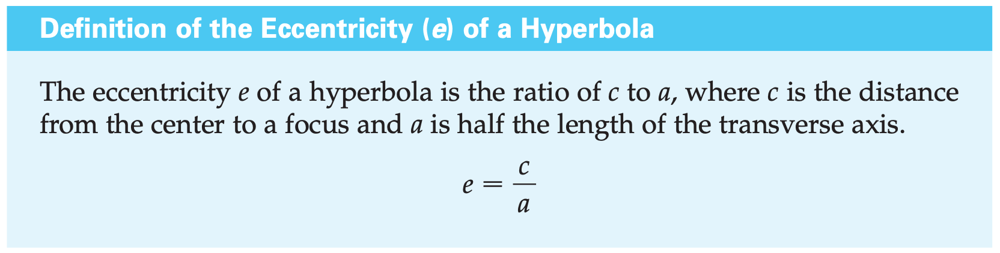
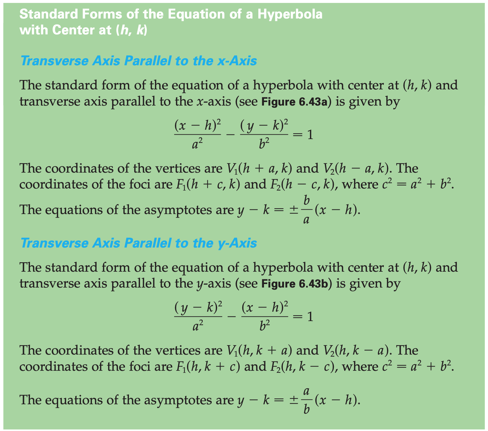
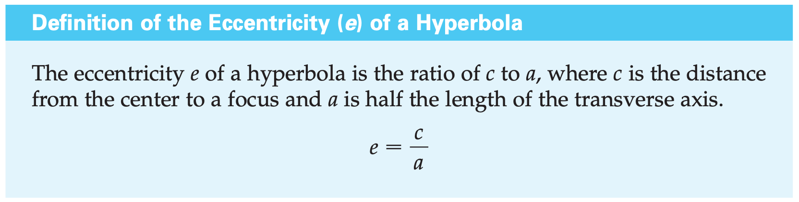

Chapter 6 | Topics in Analytic Geometry
§6.1 | Parabolas


§6.2 | Ellipses
Ellipse features review (Khan Academy)

Properties of an Ellipse
- Center
- The center of the ellipse is the point at the intersection of the major and minor axes.
- Major Axis
- The major axis is the longest diameter of the ellipse, and the minor axis is the shortest diameter of the ellipse.
- The major axis connects the vertices of the ellipse, and the minor axis connects the co-vertices of the ellipse.
- Minor Radius
- The minor radius, which is also known as the semi-minor axis, is equal to half the length of the minor axis.
- Major Radius
- Similarly, the major radius, which is also known as the semi-major axis, is equal to half the length of the major axis.
Computing Properties of an Ellipse with Center (0, 0)
Major Axis Parallel to the x-Axis
given
\frac{x^2}{a^2} + \frac{y^2}{b^2} = 1,\;\; a > b
therefore
- length of the major axis
- 2a
- The length of the minor axis
- 2b
- coordinates of the vertices
- (\pm a, 0)
- coordinates of the foci
- (\pm c, 0)
- where c^2 = a^2 - b^2
Major Axis Parallel to the y-Axis
given
\frac{x^2}{b^2} + \frac{y^2}{a^2} = 1,\;\; a > b
therefore
- length of the major axis
- 2a
- The length of the minor axis
- 2b
- coordinates of the vertices
- (0, \pm a)
- coordinates of the foci
- (0, \pm c)
- where c^2 = a^2 - b^2
Computing Properties of an Ellipse with Center (h, k)
Major Axis Parallel to the x-Axis
given
\frac{(x - h)^2}{a^2} + \frac{(y - k)^2}{b^2} = 1,\;\; a > b
therefore
- length of the major axis
- 2a
- The length of the minor axis
- 2b
- coordinates of the vertices
- (h \pm a, k)
- coordinates of the foci
- (h \pm c, k)
- where c^2 = a^2 - b^2
Major Axis Parallel to the y-Axis
given
\frac{(x - h)^2}{b^2} + \frac{(y - k)^2}{a^2} = 1,\;\; a > b
therefore
- length of the major axis
- 2a
- The length of the minor axis
- 2b
- coordinates of the vertices
- (h, k \pm a)
- coordinates of the foci
- (h, k \pm c)
- where c^2 = a^2 - b^2
§6.3 | Hyperbolas
 



§6.4 | Rotation of Axes
§6.5 | Introduction to Polar Coordinates

§6.6 | Polar Equation of the Circle
§6.7 | Parametric Equations